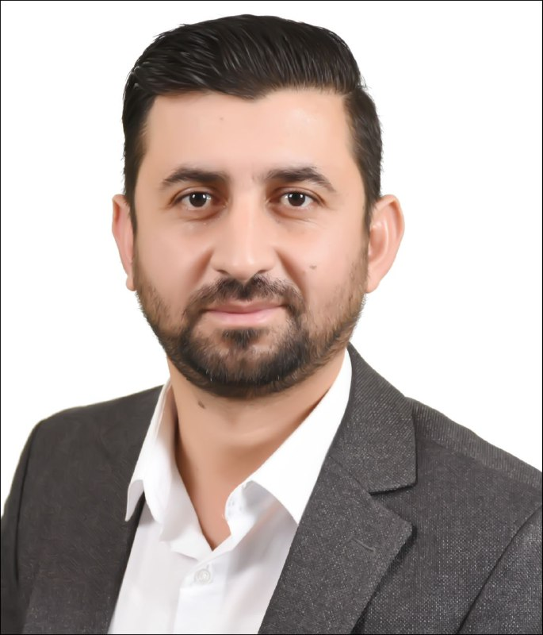

Ph.D. in Computer Science — Artificial Intelligence
University of Mosul · Iraq
Computer Science · AI
I am Dr. Maher Khalaf Hussein, a Computer Science lecturer and researcher focused on intelligent systems, practical programming, and meaningful digital solutions.

About
I am a lecturer at the University of Tal Afar in Nineveh, Iraq, with a Ph.D. in Computer Science specializing in Artificial Intelligence. My work connects teaching, research, and technology to help students and organizations address real-world challenges.
In addition to teaching and supervising student projects, I serve as the officer of the Technical Training Division at the Computer Center, supporting the development of digital skills across the university.
Education
University of Mosul · Iraq
University of Mosul · Iraq
Al-Hadbaa University College · Mosul
Expertise
Web development
Backend systems
Responsive interfaces
Programming & AI development
Data management
Version control
Scientific computing
Software development
Research workflows
Content management
Research
Machine learning, deep learning, and intelligent applications.
Image classification, pattern recognition, and medical analysis.
Turning computational methods into practical academic solutions.
Let’s connect
I welcome opportunities for academic collaboration, research discussion, and knowledge exchange.
maher.k.hussein@uotelafer.edu.iq